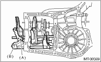
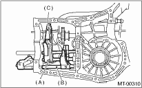

1. Remove the manual transmission assembly from the vehicle. 
2. Remove the back-up light switch and the neutral position switch.
3. Remove the transfer case together with the extension case assembly.
4. Remove the transmission case.
5. Remove the drive pinion shaft assembly.
6. Remove the main shaft assembly.
Single-range model
Dual range model
7. Remove the front differential assembly.
8. Drive out the straight pin by tapping with the ST, and pull out the 5th shifter fork.
| ST 398791700 | STRAIGHT PIN REMOVER |

|
(A) |
Straight pin |
|
(B) |
5th shifter fork |
9. Remove the plugs, springs and check balls.
10. Drive out the straight pin, and pull out the 3rd — 4th fork rod and shifter fork.
NOTE:
When removing the rod, keep other rods in neutral.

|
(A) |
Straight pin |
|
(B) |
3rd-4th fork rod |
|
(C) |
Shifter fork |
11. Drive out the straight pin, and pull out the 1st — 2nd fork rod and shifter fork.
12. Remove the snap ring (outer), and pull out the reverse shifter rod arm and reverse fork rod. Then take out the ball, spring and interlock plunger from the rod.
And then remove the rod.
NOTE:
When pulling out the reverse shifter rod arm, be careful not to let the ball pop out of arm.
13. Remove the reverse shifter lever.